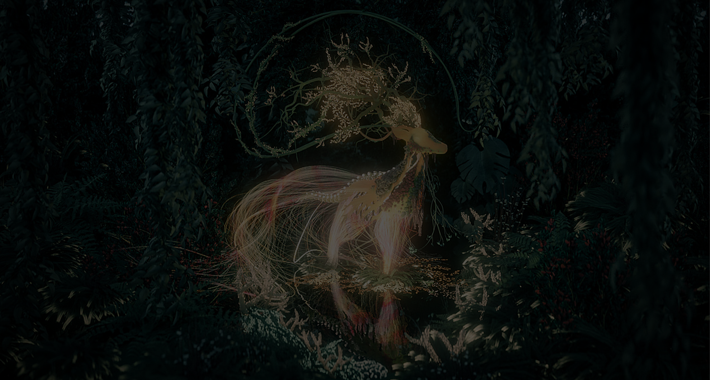

Analytical mindset
I like to solve the most complex problems simply and efficiently,
I am ready to spend thousands of hours programming and sometimes solving puzzling problems,
the most problematic problems require a collective solution,
which is not a problem for me, since I write clean
and understandable code that I can also present.
Remotely Work
I prefer to work like a professional in a very organized, precise and efficient manner.
Thanks to this manner of work, I am able to work both on site and remotely.
Among other things, while working with me, you can not worry about keeping trade
secrets and trust me with important work both on site and remotely.
Responsibility & communicable
I am a very responsible person when it comes to getting things done
on time, I am proactive with good ideas and my Soft Skills are pushed to the limit.
Modern development is a team work and I think that everyone should be able to find
a common language with colleagues and partners, negotiate, effectively present their ideas,
speak well in front of a large audience and manage their time.
Flexibility & Punctuality
Flexibility and punctuality is one of my main qualities.
I am a time watcher and am never late without a critically good reason.
I also appreciate and understand when and how much I need to work.
Learning & Working
"Live and learn" is a wise phrase that makes me feel better every day.
Every day is a lesson from which everyone must learn something.
Learn and put your knowledge into practice!
Good concentration
I am a process oriented person with a focus on details,
with an algorithmic approach and an analytical mindset.
I am sure that I can solve any problem that requires an algorithmic mindset.

Who am I
I'm an Full-Stack software developer who also spezialize on Website's and 3d modeling.
While my work in different companies I also was writting documentations and made
documentations Videos about companie software.
What I do
Currently I'm learning in school called "BBS2Leer" in Leer(Ostfriesland), Germany.
While learning there I search and do some work placement in different companies.
Also I can make a website for you, just contact me.
Where am I
I live in the small city Leer(Ostfriesland), Germany. It's a beautiful and piecefull
place where is based a small number of IT-companies.